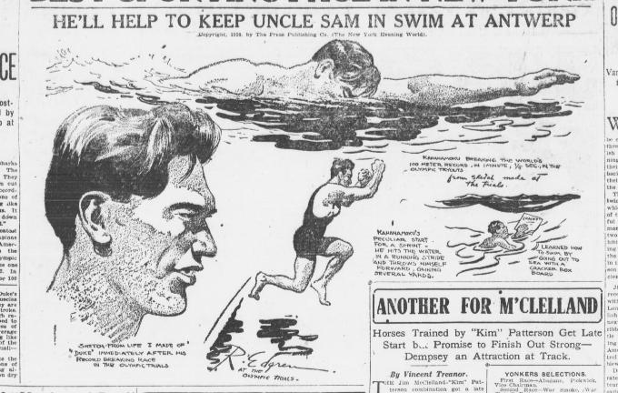

Desde a pré-história, a habilidade humana de nadar, ou seja, a natação, é praticada em diversas culturas antigas. No início, a natação só possuia dois estilos de nado, sendo eles crawl (nado livre) e peito. Com o decorrer dos anos, novos nados foram implementados sendo eles: costas que consiste no ato de nadar com o corpo virado de costas para o fundo da piscina e o nado borboleta, que nasceu como uma derivação do nado peito na década de 1930.
Contudo, como um esporte competitivo, a natação surge no século XIX, com as primeiras competições sediadas em Londres no ano de 1837. Essa primeira competição culminou na criação do primeiro livro de regras sobre esse novo esporte. Com o passar dos anos, o esporte foi ganhando reconhecimento mundial. Esse prestígio se consolidou com a criação de uma nova competição mundial, que seria a primeira edição dos Jogos Olímpicos da era moderna, realizado em 1896, em Atenas.
Ao longo das décadas, a natação olimpíaca evoluiu consideravelmente, incorporando novas provas, como o revezamento misto. Em paralelo à esse crescimento, os Campeonatos Mundiais de Natação, realizados pela World Aquatics (entidade responsável por administrar competições internacionais dos esportes aquáticos).
As provas são disputadas em piscinas olímpicas com 50 metros de comprimento, divididas em 10 raias. Os quatro estilos principais são: crawl (nado livre), costas, peito e borboleta. Esses estilos podem aparecer sozinhos nas provas individuais ou combinados em disputas de medley, tanto individuais quanto por equipes.
Apesar de ser majoritariamente individual, a natação também conta com provas em equipe, como os revezamentos, que exigem coordenação e estratégia. Um exemplo é o revezamento medley, no qual cada atleta nada um estilo diferente, seguindo a ordem: costas, peito, borboleta e crawl.
As regras da natação são rigorosas para garantir igualdade entre os competidores. Durante uma prova, por exemplo, não é permitido tocar o fundo da piscina. No nado peito, após a largada e após cada virada, o nadador pode dar uma braçada até os quadris e uma única pernada de borboleta. Qualquer execução incorreta pode levar à desclassificação.
Além das regras técnicas, também existem diretrizes sobre os equipamentos. Em 2009, os trajes de alta tecnologia, conhecidos como "body suits", foram proibidos em competições oficiais. Eles ofereciam vantagens como maior flutuação e menor resistência na água, o que desrespeitava os princípios da competição justa, o tornando um tipo de doping.
As provas mais longas em piscinas olímpicas chegam a 1500 metros, exigindo extremo preparo físico e mental. Essa diversidade de distâncias e estilos faz da natação um dos esportes mais completos e desafiadores, tanto para atletas quanto para o público.